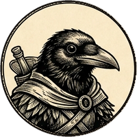
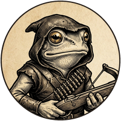

A squad wargame · a sandbox guild
GARTOK
Tactical
❦
In Gartok the risk pays. Most of those who take it do not live to spend it.
Last guild saved 22 Oct, 23:41
The Ashen
Lantern
Caravan
A coin that sits still is a coin half spent.
23Day
4Members
7Wins
3Buried




On the Old Road · two groups abroad
ContinueEnter
Gartok Tacticalbuild 8e71481 · the lost RPG, rebuilt from its character generator